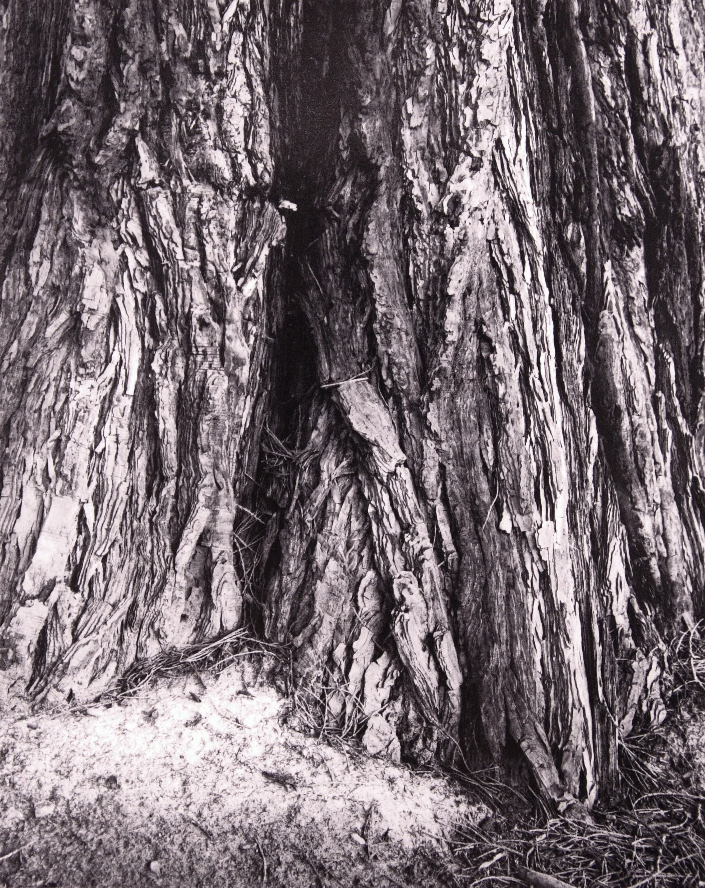

Visual & Spatial Design
Early Work
Early art and user experience projects. Envisioning, creating, and finalizing concepts.
Charcoal


Figure Legs · Charcoal · c. 2007
Form Study · Charcoal · c. 2008
Elemental study · Charcoal · 2008
Bird study · Charcoal · 2011
Face Gesture 1 · Pencil · 2012
Face Gesture 2 · Pencil · 2012
Face Gesture 3 · Charcoal · 2012
Face Gesture 4 · Charcoal · 2012
Film Photography

Cedar Trunk · Film photography · 2007
Visual Merchandising


Macy's Juniors Dept · Visual Merchandising · 2009
Macy's Juniors Dept · Visual Merchandising · 2009
Macy's Juniors Dept · Visual Merchandising · 2009